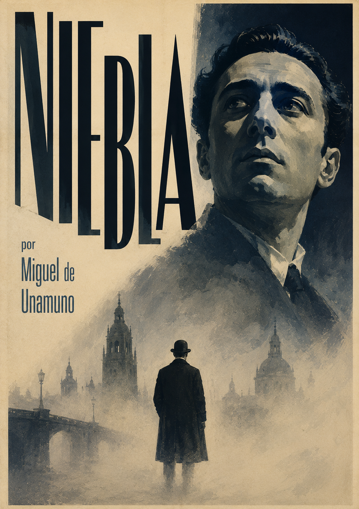
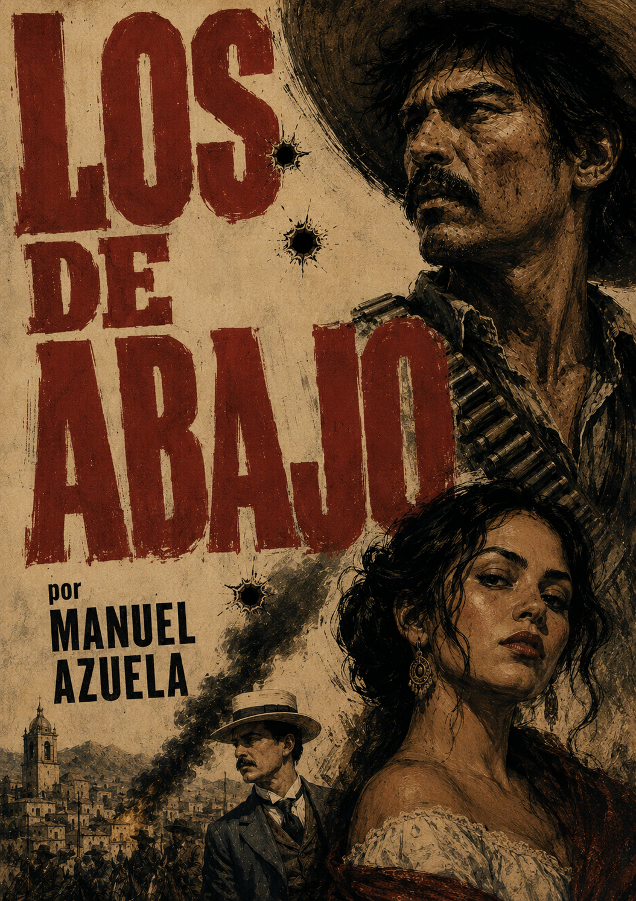
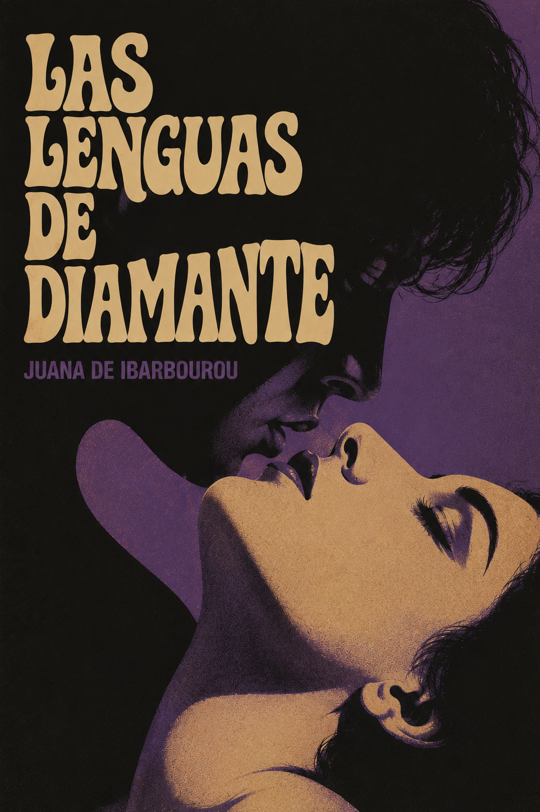
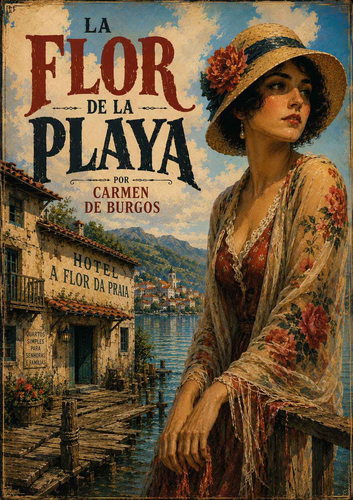
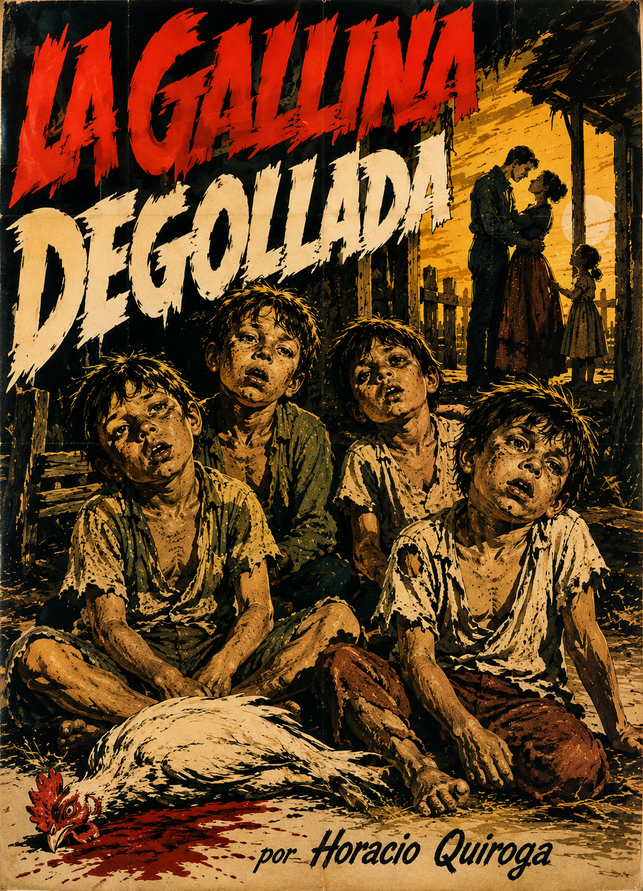

Niebla
5.0
Resumen
Miguel de Unamuno bautizó esta obra de 1914 como "nivola" para liberarla de las reglas de la novela tradicional: Augusto Pérez, un hombre atrapado en una crisis amorosa y existencial, termina viajando a Salamanca para confrontar cara a cara al propio Unamuno, su autor, y exigirle explicaciones sobre el libre albedrío que se le niega como personaje. Un ejercicio temprano y radical de metaficción que convierte la pregunta por la libertad humana en literatura pura.

Los de abajo
5.0
Resumen
Mariano Azuela escribió esta novela de 1915 casi al mismo tiempo que vivía la Revolución mexicana como médico de tropa, y se nota: sigue a Demetrio Macías, un campesino arrastrado a la lucha armada, a través del caos, el idealismo desgastado y la violencia cíclica de un movimiento que devora a los suyos. Considerada la primera gran novela de la Revolución, retrata sin heroísmo ni sentimentalismo lo que significa luchar por una causa que ya no se entiende del todo.

Las lenguas de diamante
4.3
Resumen
El poemario de 1919 que consagró a la uruguaya Juana de Ibarbourou como "Juana de América": una celebración sin pudor del cuerpo, el deseo y la naturaleza desde una voz femenina que se niega a pedir permiso. Su sensualidad directa y su musicalidad la convirtieron en una de las figuras centrales del modernismo tardío latinoamericano, e influyeron a generaciones de poetas que vinieron después.

La flor de la playa
4.2
Resumen
Carmen de Burgos, pionera del periodismo y del feminismo español firmando como "Colombine", ambienta esta novela corta en un pueblo costero donde el romance de temporada se cruza con las restricciones reales que enfrentaban las mujeres de la época. Bajo la superficie ligera de un relato de balneario, Burgos desliza su crítica constante a un mundo que le exigía a la mujer elegir entre el deseo y la respetabilidad.

La gallina degollada
5.0
Resumen
El cuento de 1917 con el que Horacio Quiroga selló su lugar como el gran maestro del horror latinoamericano: un matrimonio ve nacer a sus cuatro primeros hijos con una discapacidad severa, uno tras otro, y deposita toda su esperanza en Bertita, la hija menor que nace sana. Cuando los hermanos mayores presencian a la sirvienta degollar una gallina para la cena, algo se despierta en ellos que la familia jamás vio venir. Un relato breve, brutal y perfectamente calculado sobre la culpa, la negligencia y el instinto que acecha bajo la superficie de lo doméstico.